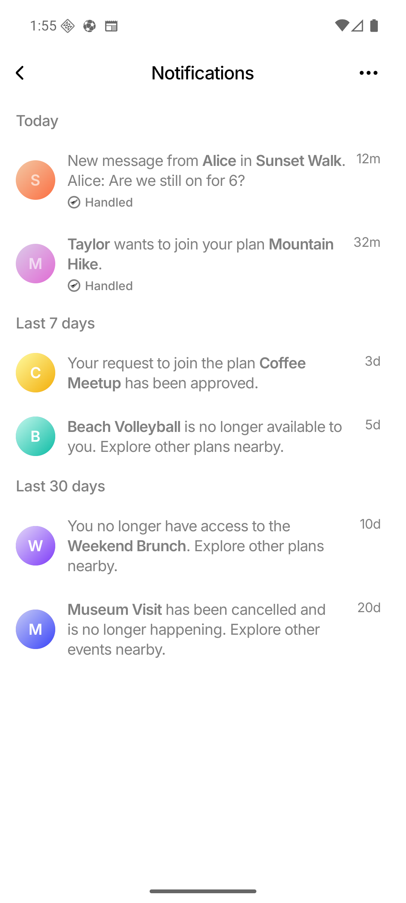
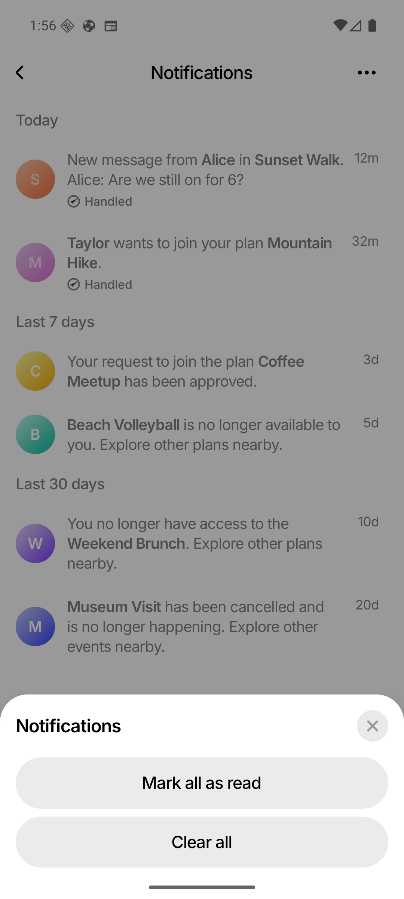
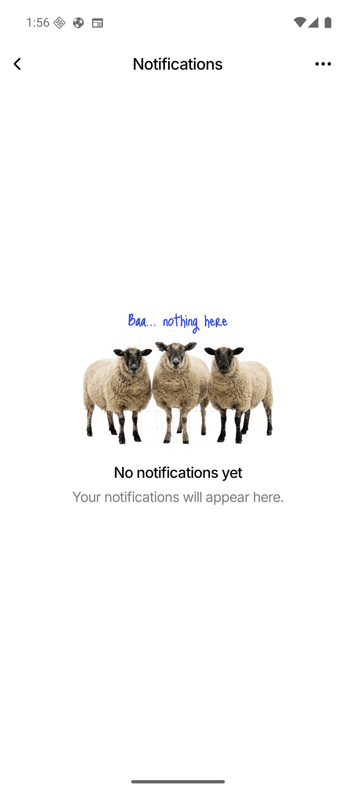
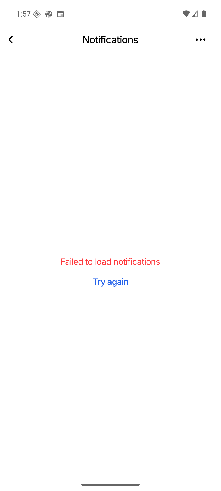

Notifications — Issue #128
Implementation and Android verification report for GitHub issue #128.
PASS — all requested items implementedResolution summary
| Issue item | Implemented result | Evidence |
|---|---|---|
| 1. Notification actions | Mark all as read stays enabled even with zero unread items; Clear all uses the normal black action treatment. | Screenshot 2 and rendering tests |
| 2. Empty-state copy | Displays “Your notifications will appear here.” | Screenshot 3 |
| 3. Date headings | Uses “Last 7 days” and “Last 30 days”. | Screenshot 1 and section tests |
| 4. Safe load error | Displays only “Failed to load notifications”; the underlying transport error is never shown to the user. | Screenshot 4 and context test |
| 5. Notification wording | All five non-chat notification types use the requested plan/event wording. Chat copy remains unchanged. | Screenshot 1 and exact-copy tests |
| 6. Push/inbox consistency | A shared server copy function now generates both FCM and persisted inbox text. The only intentional difference is the requested inbox full stop for join-created and approved. | Go mock-push integration tests |
| 7. Server/client inconsistency | Single notification rows render the server body verbatim; the client only applies bold spans around structured values. | Frontend display tests |
| 8. Structured sender data |
New join notifications read senderName from payload data. Parsing the
sentence remains only as a compatibility fallback for old stored rows.
|
Collapse tests and legacy backfill test |
Implemented notification contract
| Type | Inbox body | Push title/body |
|---|---|---|
| Join request | <Person> wants to join your plan <Event>. |
Title: event; same body without final full stop |
| Approved | Your request to join the plan <Event> has been approved. |
Title: event; same body without final full stop |
| Denied |
<Event> is no longer available to you. Explore other plans nearby.
|
Title: event; identical body |
| Removed |
You no longer have access to the <Event>. Explore other plans nearby.
|
Title: event; identical body |
| Deleted |
<Event> has been cancelled and is no longer happening. Explore other events
nearby.
|
Title: event; identical body |
Android implementation screenshots




Architecture and migration
The server now owns canonical notification copy in one helper used by every relevant
lifecycle path. Existing rows receive an idempotent startup correction for the five known
notification types. New join payloads carry senderName, while legacy rows
remain readable through a narrow fallback parser. Inbox rows otherwise remain immutable, and
chat notification behavior is unchanged.
Validation
- Android emulator
WEIF_API_36, 1080 × 2400: PASS. - Focused frontend suites: 5 suites / 43 tests: PASS.
- Full frontend suite: 87 suites / 1,264 tests: PASS.
- Go notification copy, persistence, migration, and mock-push tests: PASS.
- Full Go suite: PASS.
- TypeScript: PASS.
- Lint: 0 errors; existing warning baseline retained.
- Touched-file formatting and
git diff --check: PASS.
OS push banners are not fabricated in the screenshots: local emulator push delivery is disabled. Exact FCM title/body values are verified at the server boundary with the mock push sender for group and 1:1 flows, including approve, deny, remove, and delete lifecycles.